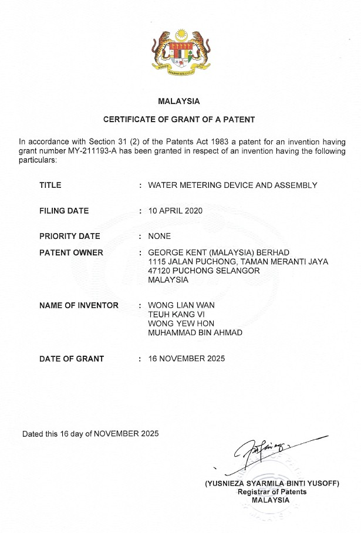

This page highlights my portfolio of patented intellectual property contributions related to smart metering and utility technologies.

Official grant certificate issued by the Intellectual Property Corporation of Malaysia (MyIPO) for Patent Number MY-211193-A.

Mechanical assembly configuration from official Malaysian Patent filing MY-211193-A, illustrating modular shroud design (14), electronic communication module (12), and integrated meter assembly interfaces (20).
Intellectual Property Profile
Patent Number: MY-211193-A
Named Inventor: WONG YEW HON (Vincent Wong)
Patent Assignee: George Kent (Malaysia) Berhad
This patent defines a specialized hardware and structural layout designed to stabilize electronic data acquisition in harsh regional environments, establishing an end-to-end framework for reliable fluid intelligence.
Features a secure, integrated bracket and modular shroud assembly interface (14) engineered to enclose and support low-power electronic communications systems directly adjacent to the meter counter register.
Employs a dual-sensor array and state-machine matrix to differentiate clockwise from anti-clockwise mechanical rotation, providing full backflow isolation and doubling measurement resolution to 4 pulses per turn.
*Note: Technical drawings, mechanical configurations, and claims are derived strictly from the official public gazette disclosures published by the Intellectual Property Corporation of Malaysia (MyIPO).
This patented technology serves as a key architectural framework for enterprise-scale, 100% Malaysian-designed and manufactured smart water meters. The design, featuring a secure, modular structure, provides advanced, ultra-low power, bi-directional flow measurement configurations optimized for harsh, local, and regional operating environments.